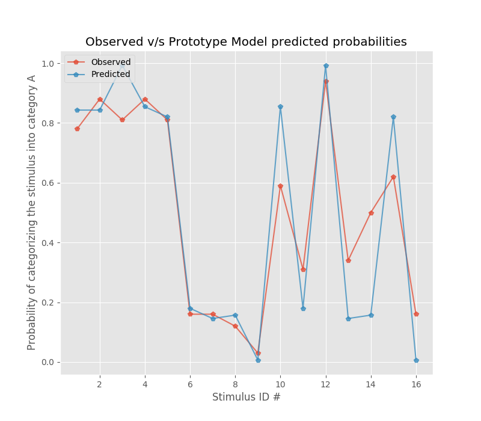

Prototype Model¶
Module : prototype
The above module contains the necessary functions that helps in implementing the Prototype model. The documentation for these functions is described below.
-
Prototype.prototype.distance(w, x, i, P, r)¶ Function that calculates the distance between stimulus and prototype in the psychological space
- Parameters
w (list) – This is the list of weights corresponding to each dimension of the stimulus in the psychological space
x (np.array) – This is the stimuli representation in the psychological space. The stimuli are given to this function in the form of a n x N matrix, where n is the number of stimuli and N is the number of dimensions of each stimuli in the psychological space
i (int) – Stimulus i
P (list) – P is the prototype that is represented in the form of co-ordinates in the psychological space. For example, if it is a four dimensional psychological space, a prototype for a category could be [1,1,1,1]
r (int) – This is the Minkowski’s distance metric. A value of 1 corresponds to city-block metric (generally used when the stimuli has separable dimensions) ; A value of 2 corresponds to eucledian distance metric (generally used when the stimuli has integral dimensions)
- Returns
The distance between Stimulus i and Prototype P in the psychological space
- Return type
float
-
Prototype.prototype.probability_of_category(categories, category, prototypes, w, x, i, r, c)¶ Function that calculates the probability of category response A given stimulus i
- Parameters
categories (list) – This is the list that indicates which stimulus belongs to which category. For example, out of 5 stimuli, if stimuli #0, #2, #4 belongs to category 0 and the rest belongs to category 1, then categories_Idx = [[0,2,4],[1,3]]
category (int) – Category number
prototypes (list) – This is the list that contains the prototype representation for each category. For example, if there are two categories and the stimulus representation has four dimensions, the prototypes could be [[1,1,1,1],[0,0,0,0]]
w (list) – This is the list of weights corresponding to each dimension of the stimulus in the psychological space
x (np.array) – This is the stimuli representation in the psychological space. The stimuli are given to this function in the form of a n x N matrix, where n is the number of stimuli and N is the number of dimensions of each stimuli in the psychological space
i (int) – Stimulus i
r (int) – This is the Minkowski’s distance metric. A value of 1 corresponds to city-block metric (generally used when the stimuli has separable dimensions) ; A value of 2 corresponds to eucledian distance metric (generally used when the stimuli has integral dimensions)
c (float) – This is the scale parameter used in the similarity calculation
- Returns
The probability of category response A given stimulus i
- Return type
float
-
Prototype.prototype.similarity(c, d)¶ Function that calculates the similarity between stimulus i and P
- Parameters
c (float) – This is the scale parameter used in the similarity calculation
d (float) – This is the distance between stimulus and the prototype in the psychological space
- Returns
The similarity between the stimulus and the prototype
- Return type
float
Example¶
A Sample Script : sample
The above script illustrates how one can use the prototype module. As an example, the above script generates figure 1 in [MiSm02]. The data set of [MeSc78] is used.
References
- MiSm02
Minda, John P.; Smith, David: Comparing Prototype-Based and Exemplar-Based Accounts of Category Learning and Attentional Allocation. In: The Journal of Experimental Psychology: Learning, Memory, and Cognition. 2002, Vol. 28, No. 2, 275–292
- MeSc78
Medin, Douglas L.; Schaffer, Marguerite M.: Context Theory of Classification Learning. In: Psychological Review. 1978, Vol. 85, No. 3, 207-238